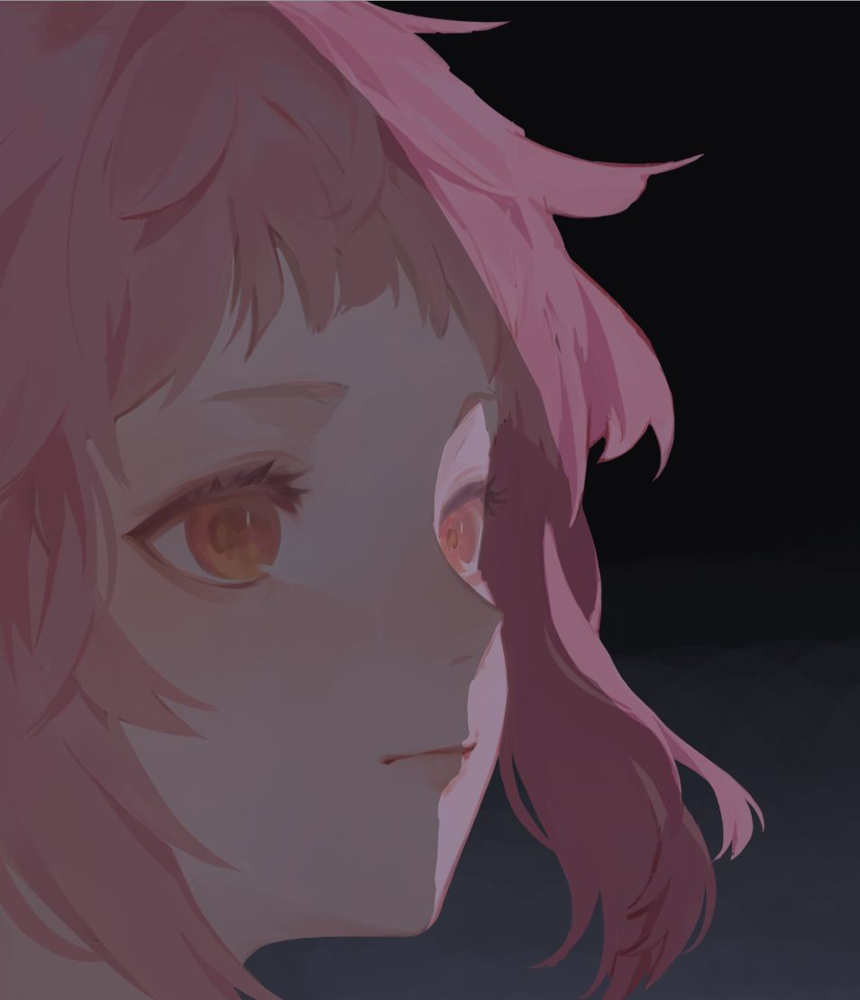

Krenz色彩 L1 作业笔记
考虑到色彩我是刚开始接触，我大概会有非常多新东西需要去记录。出于某种心理我记到博客而非 logseq 中。
以及这第一篇笔记我记了太多东西了，把书读太厚了，在将来肯定得再把书读薄。
第一课主要体验打光和二分流程。
二分。我现在还没有相关经验。二分究竟怎么画？我先预测一下。
总之，底层逻辑是所画物体的空间结构，必须要从结构出发，不然不会有底气去做形状。而在这之上，再去做主动的设计。
做二分，明显也应当先整体，再局部，先概括，再细化。这就是说，我脑子里关于物体的空间结构要是有多个不同分辨率的模型——用于开头的低模，用于细化的（相对的）高模，然后是更精细的模型……这些模型并非一开始就存在——它们是我脑中既有的知识-当前画面-对参考的理解三者的三体运动的结果，它们不断产生和迭代。就如我无数次向自己强调的——绘画是一个历史的，迭代的过程，是渐渐“建构”出来的，不是瞬间“反映”出来的。
最开始是低模，把物体理解为简单的几何体的组合，如圆柱体，球，梯台（或者稍微更复杂一些，像香蕉之类的），使用这种心智模型找最明显的明暗交界线，做出最大块的形状；然后是它细化一层的模型，对每个几何体（嘿，分治来了），去根据它实际的形体去进一步明确前面的形状；然后反复如此，直到达到我们想要的模型和形状（显然，即使到这时候，它仍旧是，只能是，同时也必须是现实的抽象和概括）。
A01
打开公版，我先问一个问题——overlay干啥的？它的中文叫叠加，属于颜色混合组（Misc）。
观察效果，Overlay可以认为是一种考虑底层颜色的染色，它似乎基于相乘（multiply，即正片叠底）和滤色（Screen）。总之在这里使用Overlay是想给底层的黑底染色顺便把底下亮的部分更提一下。必须是Overlay？不必须，这个得看习惯。我将来要建立自己的混合模式工具库。对混合模式的理解明显不能出于公式——这个不好找也难以应用在实践上，应当从实际效果出发，并尽量分类，尽量精简，尽量感性——将来思考混合模式要用这样的顺序——我要达成这个目的，所以要使用这个类型的混合模式，这个模式效果太强了，我得换个更柔和的，这个！
顺便我在Misc中找到一个模式Greater，覆盖较不透明色，这能避免笔触重叠时变得更深，看上去很有实用价值，看有何情况下可能会用到吧。
OK，这个填色是用正片叠底。反复和参考对比（记得放到同一个显示器中看，这是要交作业的，不能有硬件的色差去干扰它）。
然后直射光，直射光用颜色减淡 Color Dodge，它的效果是很夸张地变亮的同时部分地参考底层颜色。
做直射光就是做二分，做明暗交界线了。明暗交界线应当以空间思维去思考，具体的说，直接采用3D模型的心智模型——把形状理解为面片，去思考它们的遮挡，和光线的关系，从哪里开始逆光……

我遵循我之前定的步骤——先定整体的大形状，再去做细分，所以第一步我先这么干——头发我是先直接当作一个球去思考，把上面整个的形状用一条线概括等后面再修。但脸颊和侧发的明暗交界线我就直接画了因为它比较简单明确。注意嘴唇上的明暗交界线我把细节给处理了——上嘴唇的下面做暗，下嘴唇的上面做亮。

我是觉得这个步骤已经能看了……这再次证明底图的重要性，底图为我预先提供了很精致的空间结构（的印象）了，我几乎可以完全根据它去做进一步“推导”，如果底图太烂或者根本没有底图，我就是去创造了——推导是我脑子里已经有空间结构，我要用形状去表达它，创造是我同时用形状去明确空间结构和进行表达，显然这会很难很累。
先定大形状大体积，再定小形状小体积！
然后，再把大的形状再细化，根据结构来！注意不要颠覆之前定的大形状，目的是丰富它，不是把它剪碎。

以及，形状要易读，要好看，要明确，要“宁方勿圆”，要自信，强硬地说，这里的光影就会造成这样的形状！即使可能存在微妙的错误，自信比事实更重要。
我注意到，在头发上用小缺口做细节（材质？）时，如果小缺口太小，反而看上去像是形状的瑕疵而非细节了。果然形状应当明确地传递出什么东西。
好像不应该让头发平行——相邻的头发应该有不同的朝向，有大中小的分别。平行会僵化。
问了助教两个问题，ta都同意，我真强w：
- 作业的注意事项中强调先把头发当成帽沿状，把头当成球体去看待，然后后面再去考虑头发的更细节的结构（像山脊像香蕉啥的），是否这是绘制二分（乃至于思考物体的空间结构？）的一般论？就是先把物体理解为成大的，简单的几何体，去做大的形状，然后再去考察更细节、具体的结构，去细化这个大的形状或增加新的小的形状？总的来说是先整体再局部，先大再小？
- 我感觉好像参考图中有一些直射光的形状无法用结构去解释，这是否是说形状不仅要来自于结构，还要画师进行主观的设计，去让它更好看？
节点二就是画一笔透光，用Soft Light模式，加了透光后马上就有光感了……
一个重点是，时不时检查画面的灰阶！有时候被色彩遮蔽的问题，用灰阶就能够很清晰地看出来！镜像反转也是可以的——想不到吧，它不止可以用来检查形准和透视正确。
A02 第一个
Let’s 二分！
我决定先完成1个，再去同时完成剩下的2个。
首先是第一个，还是按照之前的想法——我先把它理解为简单几何体——我把头部想象成球，我无视头发的材质和小的起伏就想像成有厚度的带子之类的，然后先瞬间出一个结果：

这一步我直接用柳叶笔做，很舒服。实际上，我觉得这已经就开始有感觉了……
但我也意识到我脑子里在强烈拒绝这个作业——画个10分钟我就想逃离了，这证明它非常远离我的舒适区……战吧！焦虑和恐惧，都将被实践解决掉。
然后再细化，在每个部分都去推进一下完成度，Let’s divide and conquer。
然后，按照我自己的理解，我就画成这样了……整个的立体感是造出来了，但感觉各种细微之处仍旧有需要调整的地方。

观察作业中给出的标准的二分，我注意到……其实就连空间结构，实际上也是参考信息——我注意到参考图中的许多形状都是违背结构的，大胆，自信，漂亮，而没管实际的结构究竟会不会产生这样的形状。所以，这实际上也是说，我应当比当前的我更加松弛一些，我要更多尝试去追求形状的好看，保证空间结构在整体上不被违背，而在细节上，自由一些，更多以平面的，构成的思维去看。
所以，这就是关键——所画实际物体的空间结构是我用于绘画的参考信息而非框架；我利用它提供的信息帮助我安排形状，但它绝不能限制我必须如此安排形状。画画终究是二维游戏，观众看到的终究是这个画布，不要被画布后面的东西所绑架了。
这里不谈实际物体的空间结构，谈我脑子里的空间结构（即我看到这个实际物体后，在我脑子里对它的空间结构的印象）。而这里有一个有趣的矛盾：是我用形状去表达空间结构，还是空间结构帮助我安排形状？两者均在发生，在脑子里发生的是后者，在现实中发生的是前者。注意到这两者实际上是一种辩证统一的关系：我思考着空间结构去安排形状，然后画面上的形状又能够让我脑子里的空间结构更加清晰。这又证明画画是一个历史的迭代的过程。
实际上可以说，我画下去的每一笔，都走了下面的路径：
graph TD
START[在脑子里建立空间结构（来自参考，当前画面，记忆……）]
START --> DRAW[根据空间结构绘制形状，其中加入自己的感性]
DRAW --> CHECK[检查我的形状是强化还是破坏体积感]
CHECK --> REFLECT[迭代脑子里的空间结构]
REFLECT --> DRAW
但这个辩证关系也应当为我所主动利用——我倘若不清楚物体的空间结构（比如我想画衣褶但我发现我连线稿都画不出来，更别提在线稿上面画二分了），我就先按照我的感性去自由发挥一下，去用二分等方法去任意创造形状，看能不能从里面再找到空间结构，再让我推进下去……写下这段话后我突然意识到，这就是为啥有的画家画画时会在一开始随便绘制笔触，这大概就是去尝试找到空间结构？也可能是找到灵感吧。当然，这里不要卡死在同一种方法下；使用二分，用环绕线，用轮廓线，用动态线趋势线，用剪影，用色彩，无所不用其极，因为这是探索，这是“大胆假设”的部分，目的是充实更多参考信息让我继续下去。（我猜测这个发现相当重要，我得强调一下。以及我又想起来我以前提到的反映和建构，我以为大师是直接把他们脑中的东西反映到纸面上，而初学者则是不断在画面中建构，用笔触找灵感，做透视辅助线（其实我当时提及这两个词的时候我是在思考透视——是一次性把物体画出来还是先画辅助线，先从它的概括形出发，这里把建构这个词泛化了）……这个辩证关系进一步强调了“建构”的重要性。我决心不再去关心所谓的“反映”了，能真正做到此事的世间确实没有几个人。我要接受，承认绘画是历史的迭代的过程，并在迭代的过程中找到快乐。在我的画面的进步的同时，我对画画本身的认识才会进步）
另一种说法是，上色是基于物体的空间结构的设计，它归根结底是做设计。而我之前所学的东西，透视，艺用人体，褶皱，考虑到我同样论证它们也是参考信息，最终还是要为画面去服务，而正确性次之，我也应该说，我绘制场景，绘制空间中的人体，绘制衣服，是基于透视理论（无论是确实的透视学的理论还是我总结的实践规律），基于我脑袋里的艺用人体和褶皱原理去做设计。参考信息越丰富（即我对物体的空间结构，对人体动态、肌肉，对褶皱原理越熟悉），我就越有底气，越自由地去做设计，而我所依赖的东西？说过了，它们只是参考信息。它们应当成为我脚下的坚实的舞台，而非栓住我的人偶提线。
这才是编程和艺术的根本性的不同——编程中是没有“参考信息”的，我所学的所有规则都真正的是我思考的框架，无法违背（而在这框架之中，我确实能感觉到自由，感受到逻辑思辩的快乐）。这和画画（乃至艺术）走的是两条路子——艺术中就没有真正的“绝对真理”，实际上所有规则都可以被主动地违背（那艺术的快乐呢？大概就是表达出自己想表达的东西？）。编程，规则是约束；艺术，规则是支撑。
这也是为何画画难以学习吧？毕竟总是有感性的，需要大量实践去感受的，无法用言语去描述的东西。
跑题了，总之继续！形状要“宁方勿圆”——要清晰明了，有明确的倾向性，要像是用剪刀能够剪出来的形状，大胆地使用CSI。
一个具体的地方，对细长的形状，尽量做出来变化——像眉毛一样，或者像长三角形，长四边形……不能前后粗细类似像一条很粗的线。
这里好像有个有趣的地方——在受光面，我其实是在设计影子的形状，在背光面，我是在设计光的形状。
以及，我感觉到了二分的快乐——设计形状。去设计形状，只需要寥寥几笔且能够快速迭代修正，但马上就能过出效果。据说大脑对明暗交界线，对形状特别敏感所以才如此？AI说：
- 视觉处理的优先级：人类大脑的视觉系统经过进化优化，会优先处理对比度、边缘和形状信息。这是因为在原始环境中，快速识别物体轮廓（比如捕食者或食物）对生存至关重要。明暗交界线（即光影过渡的区域）是定义物体体积和三维感的关键——它标志着从亮部到暗部的转折，大脑会自动将这些信息解读为深度和结构。这就是为什么即使只用寥寥几笔画出明暗形状，画面也能立即显得“立体”和生动。
- 格式塔心理学：这个心理学流派强调，人们会本能地将视觉元素组织成整体模式。例如，我们倾向于将连续的线条或相似的形状分组为物体。当你设计形状时，大脑会自动“填充”缺失的部分，让你从简单的明暗块面中感知到完整的形态。这就是为什么快速迭代的形状设计能迅速出效果——你是在利用大脑的这种自然倾向。
- 神经科学基础：研究显示，大脑的初级视觉皮层（V1区）对边缘和对比度特别敏感，而高级区域（如V4区）则处理形状和颜色。通过强调明暗交界线，你直接刺激了这些区域，使观众（包括你自己）能瞬间理解画面的空间关系。
他妈的，别写了，写了两三个小时笔记画了一个小时，你真牛逼。接下来画的时候要更多感受，不要掉进牛角尖！
总之，结果：

A02 后两个
A02总共有6个作业，我这一整天就做了1个。后面的提速。
第二个也是采取了和第一个一样的方式，我先自己画，然后再根据成图去修改。第三张就不这么干了，因为这个本来就有很多感性和设计，我自己画出来的几乎一定和老师的不一样……而且我感觉从中好像吸收不到东西。
我注意到有的同学的形状画的更加朴实一些，形状普遍更大，缺乏小的精致的细节，但那样并非不好，我感觉他的结果就更加软绵绵一些，整个给人的感觉就会有差异。这证明形状的设计不止是出于个人趣味或是一个单纯的“好看”，还可以出于特定目的去画。比如我想画的很蓬松毛茸茸的感觉，或者我想画的很顺滑细致的感觉，目的不同，就会以不同的形状去表达，但整个的大形都是一致的，依赖物体的空间结构的。
在这之前，我以为这种感觉只能通过塑造去做出来，而现在看来，从二分开始就能做了。我应该尝试一下各种物体的练习——从有机物体到机械物体，把各种形状的感觉都感受一下。然后我或许会发现，形状也是可以分类的……怎样的线条组成的形状会有怎样的感觉。
睡觉吧，明天继续。
新的一天，我先玩玩鸭科夫。
然后，开做！
然后又问一个问题，同样获得肯定答复：
- 在绘制二分的时候，是否要以即使关闭线稿图层，仅通过二分也能够大概看出来物体的空间结构为目标？如果是的话，在创作中的二分步骤也要追求这个目标吗？
做完了，完美通过。看助教对其他人的评价，似乎要注意不要出现长条的线条状的形状，这时候应当用两个三角形去替代它；不要出现均等的重复的形状。
然后，看助教发的提示，做头发的形状的时候，要注意大小，间距，均要做出差异来，我是以“好看”出发在自发地做它，但这个应当成为主动的行为。口诀：大中小 疏密 不相切 不平行 不等距 不等高。
让形状不无聊。如何做出有趣的形状，在觉得形状有问题的时候做怎样的检查，我觉得这个好像是可以形式化的，做一个checklist，但等下节课吧，那时候我才有大量练习二分的机会。Let’s 画点其他的。
本博客所有文章除特别声明外，均采用 CC BY-NC-SA 4.0 协议 ，转载请注明出处！